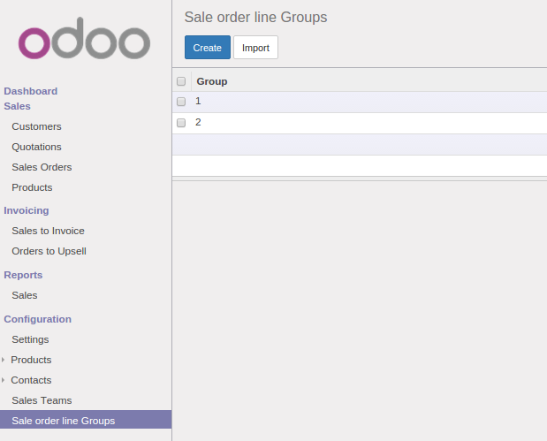

1) Sale Order Configuration.

You can configure Line Groups from:
Sales > Configuration > Sale order line Groups.
2) Sale Order Line Groups.
3) Delivery Orders creation according to allocated groups.